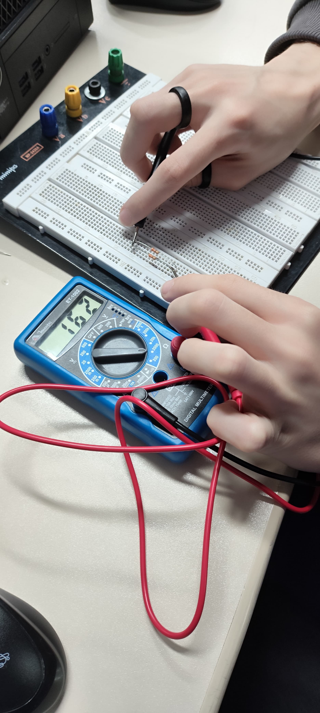

A associação de resistores em paralelo acontece quando os resistores são conectados em ramos separados, permitindo que a corrente elétrica se divida entre eles.
Medição de Resistência de Dois resistores em Paralelo de 330 Ohms

Medição de Resistência de Três Resistores em Paralelo de 330 Ohms